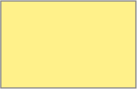

Монголо-татарська навала на Русь (XIII – XV ст.)
Державні утворення
| Руські князівства | |
|  | Улус Джучі |
| кордон держав | |
| межа територій, залежних від Золотої Орди |
Міста наприкінці XIII ст.
| міста засновані монголами в XIII ст. (за В.Єгоровим) | |
| міста засновані монголами в XIII-XIV ст. (за В.Єгоровим) | |
| поруйновані міста монголами за літописними джерелами | |
| поруйновані міста монголами за даними археології або припущенням дослідників |
Примітка. уточнення щодо позначень міст: Лікостомо? - непевна (дискусійна) локалізація об'єкта; [Кучугурське]/(Мамаїв Сарай?), Янґі-Шегр?/[Старий Орхей] - локалізація об'єкта безсумнівна, але ідентичність другої назви з першою чи першої з другою викликає сумніви; Хмелів?/Городок-на-Черемоші? - локалізація об'єкта дискусійна, як й ідентичність другої назви з першою.